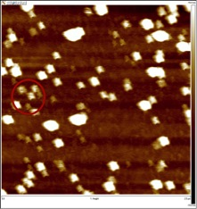
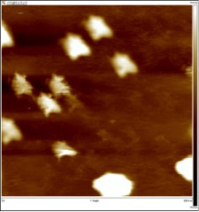
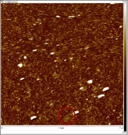

All of the DNA structures were observed by an atomic-force microscope Multimode 8 (Bruker).
Structures of well-defined rectangular origami were observed (Fig. 1-a,b). They were just about the size we had expected (70nm x 100nm) as well. However, some samples showed origami that were all distorted very similarly (Fig. 1-c). This suggests the modification we made to the several staple strands might have had an effect on the proper formation of the structure. In addition to that, these origami were much larger both in area and height. Since some structures had twice the area of the supposed origami, there may be a possibility that several origami stuck on top of each other or sideways.
Images of origami when glue sequence strands were added are shown below (Fig 2). We let the glue strands react with the origami for 1 hour at room temperature before observation.
a. b. c.As seen in the images, the origami did not form a large sheet as we had anticipated; the maximum number of origami that were close to each other was 3~4 at the most. However, we noticed there was a large difference in the arrangement of origami when compared to the arrangement of origami lacking the glue strands. The wide-angle view of the origami (Fig2-a.) demonstrates this very well. You can see that almost all of the origami are facing the same direction. There is one more point that should be noticed. Most origami had a taller height than expected, which indicates the stacking of several origami on top of each other.
The detection and determination of AuNPs attached to sheet was not very easy. This was because the diameter of the particle was as small as 5nm, and because we did not have a clear image of how a gold particle would actually appear on the screen when attached to an origami. However, there was a significant difference in the appearance of the origami, and so we think AuNPs had at least some kind of effect on the formation of origami. Additionally, we observed many origami from which some small areas were sticking out, creating a white pattern on them. Although, the size of the white area is not close to the size of the AuNPs, we think the creation of the pattern is somehow related with the particles.
Absorption spectrum or the origami was measured with wavelength ranging from 200nm to 900nm (Fig 4).
All of the samples expect the gold nanoparticles itself showed an absorbance in the range of 200-400nm. Within this range,